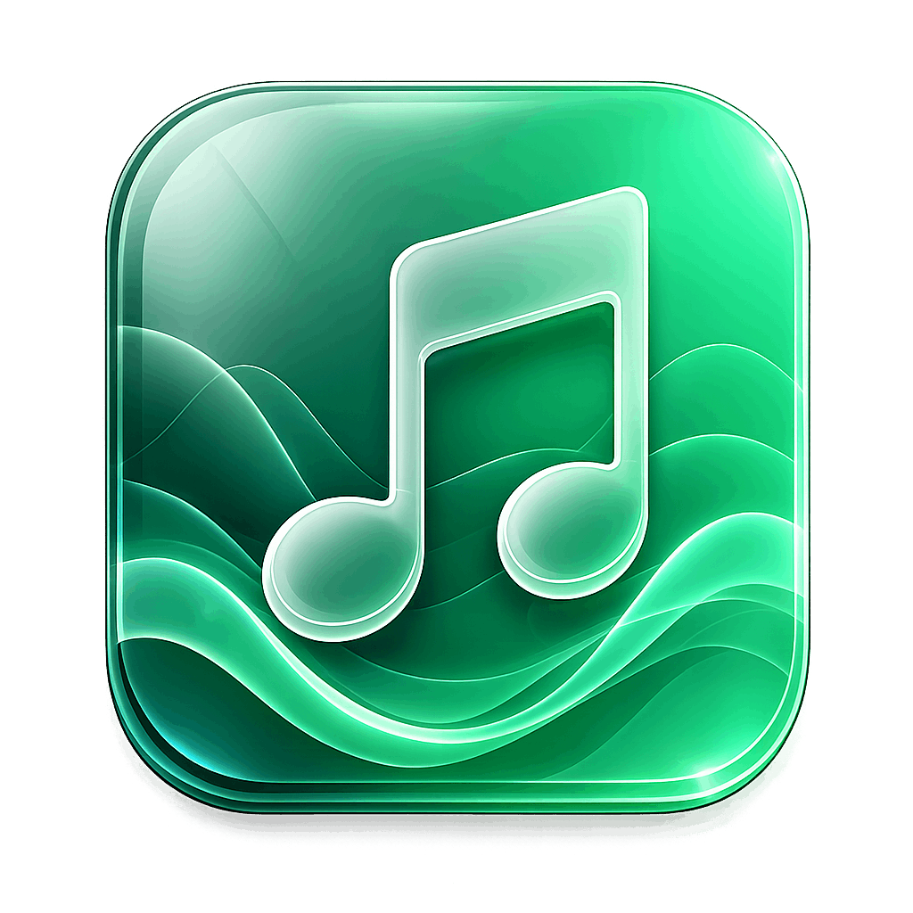

开源免费 · 本地优先 · 跨平台
原生高保真桌面音乐播放器
基于 CeruMusic 重构，Tauri 2 (Rust) 后端 + Vue 3 前端。Rust 原生音频引擎、10 段均衡器、Apple Music 风格动态歌词，通过插件接入多音乐源，无需部署中心服务。
v0.2.8
当前版本
8+
支持格式
100%
本地数据

Mio Music基于 CeruMusic 重构，Tauri 2 (Rust) 后端 + Vue 3 前端。Rust 原生音频引擎、10 段均衡器、Apple Music 风格动态歌词，通过插件接入多音乐源，无需部署中心服务。

Rust 原生引擎驱动，专辑封面主色动态主题与频谱实时可视化。
网页播放器压缩音质、歌词只能逐行、音源被锁死在单一平台。Mio Music 用 Rust 原生引擎与插件架构把它们一次解决。
"网页播放器压缩音质，没有均衡器"
"歌词只能逐行滚动，也没有翻译"
"音源被锁死在单一平台"
从原生音频引擎到动态歌词，从插件音源到加密备份，覆盖桌面音乐播放的高频场景。
Rodio + cpal + Symphonia 驱动，支持 AAC / MP3 / FLAC / WAV / OGG；无缝播放（Gapless）与可配置交叉淡入淡出（Crossfade），系统集成媒体键。
解析 LRC / YRC / QRC / TTML / LRC-A2，翻译合并显示；Apple Music 风格动态歌词；独立桌面歌词窗（透明悬浮）与自定义字体。
10 段参数均衡器，内置 8 种预设（流行、摇滚、爵士、古典等）；低音增强、环绕声模拟（小/中/大空间）、立体声平衡；A/B 双音频输出设备对比。
插件系统支持 澜音 与 洛雪 两种类型，动态安装、配置、测试；Subsonic 服务器接入自托管音乐库。
自动提取专辑封面主色，适配明暗模式，生成 50+ CSS 变量；PixiJS 着色器背景与音频响应式频谱；Three.js 粒子欢迎页。
下载管理器：暂停 / 恢复 / 取消 / 重试 / 批量；S3 兼容云存储备份（AES-GCM 加密 + 密码保护）；DLNA 投屏；SQLite 本地库 + 标签编辑。
选好音源，调校音质，进入动态歌词，再用加密备份与投屏把音乐库带到任何地方。
从插件、Subsonic 自托管或本地音乐库中挑选想听的内容。
10 段参数 EQ + 8 预设，加上低音增强与环绕声，调出你的声音。
Apple Music 风格动态歌词、翻译合并，或独立桌面悬浮歌词窗。
下载到本地、S3 加密备份、DLNA 投屏，把音乐库带到任何设备。
前端 Vue 3 + TypeScript + Vite，后端 Rust + Tauri 2。核心数据持久化在本地 SQLite，无需云服务即可运行。
Mio Music 是本地优先的桌面应用，不依赖中心服务。音乐库、播放列表与设置主要保存在本地 SQLite，S3 备份采用 AES-GCM 加密 + 密码保护，密钥由你自管。
本项目不直接获取 / 存储 / 传输任何音乐数据，仅提供插件运行框架。通过插件获取的数据，其合法性由插件提供者与用户自行负责。
自动识别当前设备，并从 GitHub Releases 读取最新版本与安装包地址。
正在读取最新安装包列表...